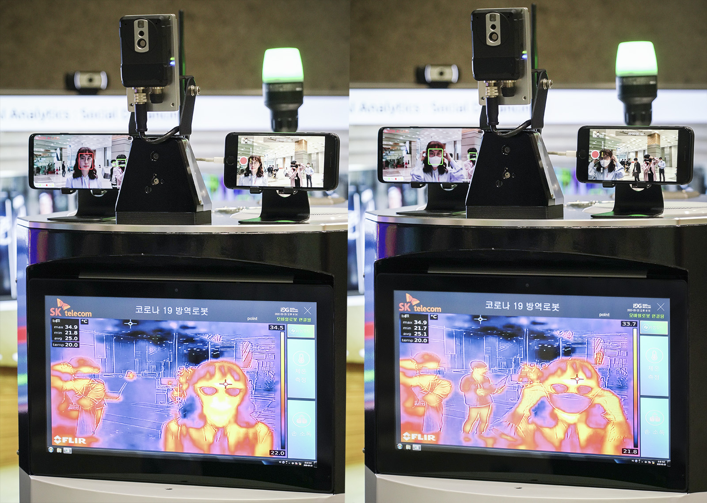

로봇은 두 가지 이유로 코로나19 대응에 효과적이다.
첫째는 돌아다니면서 감염 의심 환자를 찾아내 부족한 인력을 보완할 수 있다.둘째는 위험 지역 투입 가능성이다. 감염률이 높은 지역에 의료진 대신 로봇을 투입할 수 있다.
1) 로봇을 적극 활용하고 있는 중국
중국은 코로나19 사태에 로봇을 적극 활용하고 있는 국가 중 하나다.대표적으로, 드론을 활용해 체온을 검열하고 영상으로 마스크 착용 여부를 확인한다.
그뿐만 아니라, 농약 살포용 드론을 개조해 살균제를 살포하고 있다.
세계경제포럼(WEF)에 따르면, 중국은 드론을 살균제 살포뿐만 아니라 의료품 및 생필품 전달 용도로 활용하고 있다. 이는 의료진이 감염 위험 지역에 직접 방문하는 수고를 덜어준다.
또한 중국의 가오신싱그룹은 순찰용 로봇 ‘첸쉰’을 배치해 체온으로 코로나19 감염 의심 여부를 확인하고 있다.
그리고 로봇 ‘황톈톈’은 고속도로 검문소에 배치돼 운전자의 체온을 측정해 감염 의심 여부를 확인하고 있다.
더 정확한 검열을 위해, 코로나19 샘플 채취 로봇도 개발했다.
중국공정원은 사람의 목구멍에서 샘플을 채취해 감염 여부를 측정할 수 있는 로봇을 개발했는데, 20명 대상으로 한 임상 시험에서도 좋은 결과를 얻었다. 바이러스 감염 여부 확인은 목구멍에서 채취하는 것이 정확하다.
그런데 이러한 검사 방식은 의료진에게 위험한 업무이다. 감염자의 비말을 통해 감염될 수 있기 때문이다. 로봇이 이러한 업무를 대신하는 셈이다.

2) 로봇 활용 사례 증가할 듯...
국내에서도 로봇을 활용하여 코로나19에 대응하려는 움직임을 보이고 있다.국내 자외선 살균 전문 기업인 ‘유버’는 자외선 살균 기술을 이용한 살균 로봇을 개발했다.
유버에서 개발한 살균 로봇은 화학 약품을 살포하는 것이 아니라 자외선으로 살균하는 것이 특징이다.
따라서 기존 방식보다 인체에 무해하다. 그리고 살균에도 효과적이다. 유버에 따르면 수 십초 내로 99.99% 멸균이 가능하다.
서울의료원은 유버의 살균로봇, 휴림로봇에서 개발한 테미 발열 진단 로봇, 트위니에서 개발한 운용 로봇 등이 활용되고 있다.
음압병실에서 사용되는 살균로봇은 약품 살포 방식이 아닌 자외선 LED(발광 다이오드)를 쏘고 공기를 흡입하는 방식으로 살균해 상시로 이용이 가능하고, 로봇 팔이 이동하면서 손이 닿지 않는 사각지대까지 소독할 수 있다.
열화상카메라가 장착된 발열감지로봇은 출입구, 로비 등에서 내원객의 체온을 자동으로 측정한다.
운송로봇은 의료진과 확진 환자가 사용한 의복과 의료폐기물을 특정 장소로 옮기는데 활용된다.
이번에 사용된 로봇들은 해외에도 수출할 예정이다.
HOVID-19 박진현 기자 (HoLsToN31007@covid.19)